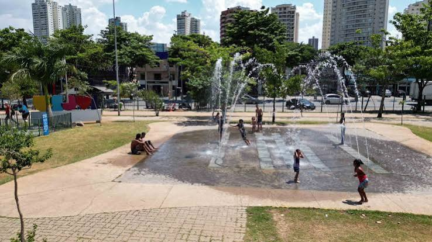
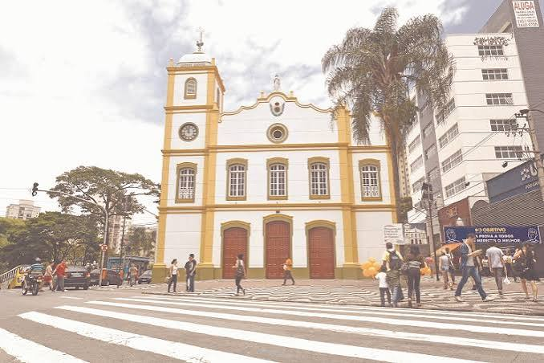
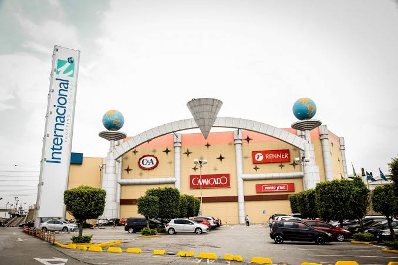
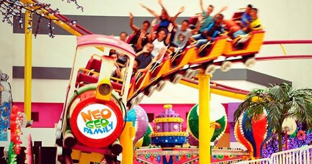
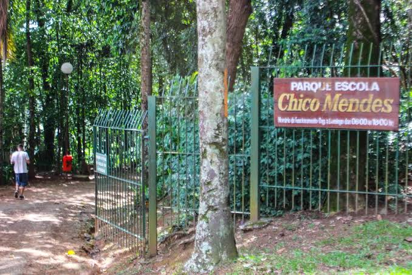
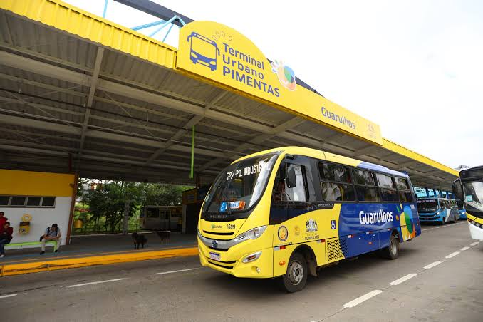
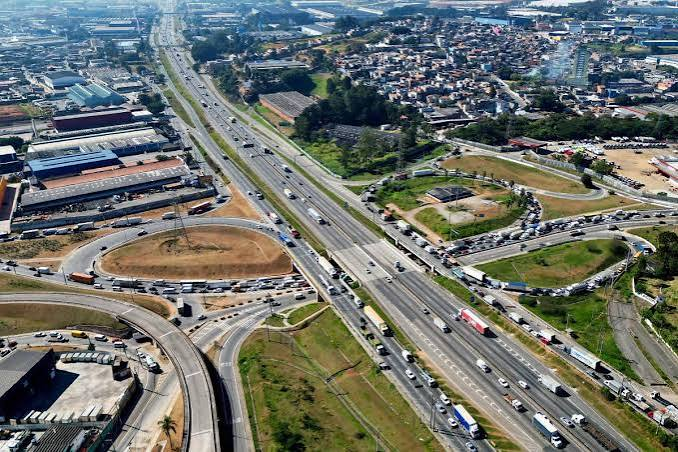
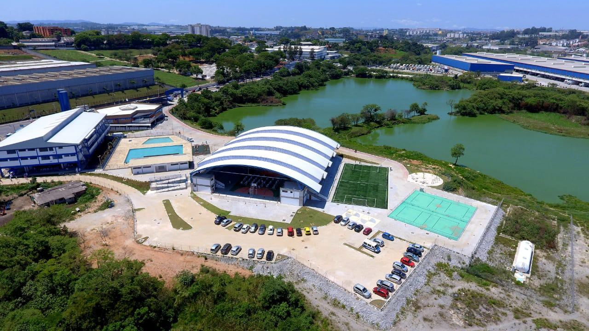
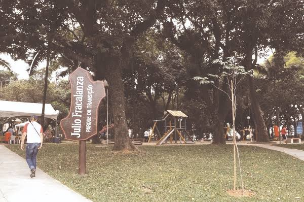

Lugares para conhecer na cidade
Aeroporto
conhecido por ser o maior aeroporto da america latina

Bosque Maia
O bosque mais conhecido da cidade marcou a vida de muitos guarulhenses.

Igreja Matriz
Conhecida por ser o marco zero da região de Guarulhos

shopping internacional
Um dos maiores Shoppings de São Paulo e possui uma estrutura incrivel em suas lojas

Parque Net Geo
Parque de diversões que fica dentro do shopping Internacional que possui uma grande variedade de brinquedos

Parque Chico Mendes
Parque e Escola que guarda memorias de muitos guarulhenses que ja passaram por lá!

Terminal Pimentas
Abrange uma grande quantidade de onibus e linhas, que percorrem por toda a cidade!

Trevo Bonsucesso
Conecido pelo seu Transito e abrange milhares de carros a cada minuto.

Ceu Bonsucesso
Um dos muitos CEU's que a cidade possui, porem o mais conhecido.

Parque francalanza
Possui uma mini cidade, para ensinar as crianças as regras e sinalizações de transito com bicicletas!